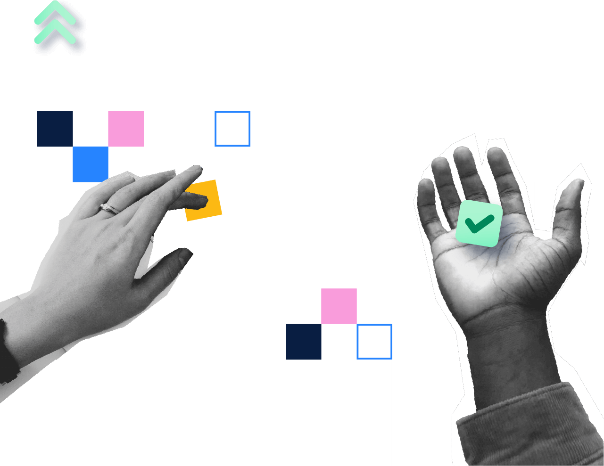
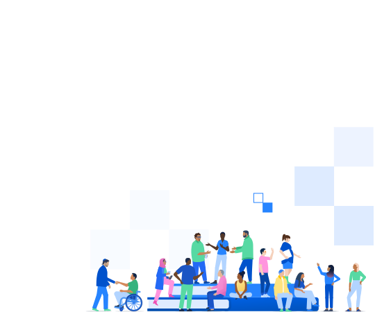

When enabled the files will be in the order you selected them in and will be prefixed by the position of the image.
Showing 48 of 59 images from www.atlassian.com
2160 x 2160
Team23_Event2x
png
159 KB
1200 x 1200
ITSM%20High%20Velocity%2023
png
80 KB
1281 x 989

Mobile_B-2x
png
150 KB
1248 x 947
Desktop_TR-2x
png
90 KB
1281 x 897
Mobile_T@2x
png
70 KB
1289 x 863
Dektop_TL@2x
png
82 KB
940 x 989
Desktop_BL-2x
png
90 KB
874 x 903
Desktop_BR-2x
png
90 KB
1520 x 470
Community@2x
jpeg
95 KB
900 x 736
solutions_1_Con_Trello_JWM
svg
43 KB
900 x 736
solutions_2_JSM
svg
36 KB
900 x 736
solutions_3_Jira_Jira%20align_Compass
svg
30 KB
720 x 470
CommunityMobile_360x235@2x
jpeg
25 KB
720 x 470
Blog_360x265@2x
jpeg
23 KB
720 x 470
Team%20Playbook_360x265@2x
png
22 KB
720 x 470
Agile%20Coach_360x265@2x
png
6 KB
540 x 450
CareersLeft_540x450
svg
86 KB
540 x 450

CareersRight_540x450
svg
95 KB
1441 x 93
Torn%20Edge-Divider_Desktop-fff
svg
15 KB
423 x 248
CareersCenterMobile
svg
96 KB
319 x 275
nasa
svg
9 KB
267 x 267
facebook-badge
svg
858 B
540 x 67
logos-atlassian-logo-gradient-horizontal-neutral
svg
3 KB
532 x 66
Atlassian-horizontal-blue-rgb
svg
3 KB
193 x 122
Screen%20Shot%202023-01-05%20at%203.48%201
jpeg
18 KB
166 x 56
castlight
svg
7 KB
170 x 45
redfin
svg
2 KB
140 x 49
audi
svg
3 KB
129 x 52
kiva
svg
2 KB
80 x 80
jira%20software-icon-gradient-blue
svg
1012 B
80 x 80
confluence-icon-gradient-blue
svg
1 KB
80 x 80
jira%20service%20desk-icon-gradient-blue
svg
731 B
80 x 80
mark-gradient-blue-jira-work-management
svg
489 B
70 x 72
logos-jira%20software-icon-gradient-blue
svg
1 KB
74 x 60
twitter
svg
1 KB
66 x 64
logos-confluence-icon-gradient-blue
svg
1 KB
63 x 63
Jira%20Product%20Discovery-icon-blue
svg
1 KB
55 x 70
logos-jira%20service%20desk-icon-gradient-blue
svg
776 B
60 x 60
trello-icon-gradient-blue
svg
869 B
60 x 54
logos-bitbucket-icon-gradient-blue
svg
970 B
55 x 55
Jira%20Align-icon-blue-rgb
svg
942 B
44 x 44
video-play-light
png
915 B
38 x 40
logos-atlas-icon-gradient-blue
svg
5 KB
36 x 36
Map
svg
576 B
36 x 36
CloudCheckmark
svg
419 B
36 x 36
SecurityCheckmark
svg
570 B
36 x 36
Building
svg
3 KB
36 x 36
PageMultiple
svg
908 B
Frequently asked questions
If you can’t find what you’re looking for, write us a message and we'll get back to you.
What is extract.pics?
Extract.pics is an easy to use tool that allows you to extract, view and download images from any public website. Simply paste the URL of the website into the input field and click "Extract" to start the process. After a few seconds you will see most or even all of the images found on the website.
How can I find specific images?
You can view the found images in a grid or list and explore them by sorting them by name, type, dimensions, width, height or the actual file size. Additionally you can search for images by their name, size or type/file format. This makes it really easy to find exactly the images you need.
What other tools are available?
In case some images are very bright, you can switch to a dark background to make them more visible. You can use the copy the URL of one or more images by clicking the link icon or the Copy selected URLs button. You can also very easily download indiviual images or multiple images at once by selecting them and then downloading them all in a ZIP archive.
Is it free?
Yes, extract.pics is free to use without creating an account! There is an hourly and daily limit on the number of extractions you can run to prevent abuse. However, you can extend these limits by creating an account or subscribing to a premium plan.
How can I download images?
After the extraction process is finished you will find a list of all the images found on the website you entered. You can then use the button to download individual images.
Can I download multiple images at once?
Of course, you can select them by clicking the images and the use the "Download selected" button on the left to download all selected images in a ZIP file. This can take some time depending on how many images you selected. Note that there is a chance that some images cannot be downloaded and won't be included in the ZIP file.
The extraction does not work. Why?
There are several reasons why the extraction might fail. The website you entered might be not be publicly accessible or it might be protected by a login. Very slow or large websites might also cause issues.
And sometimes there are a lot of people using extract.pics at the same time which can cause performance issues on our side. In this case you should try again later or try a different website. We are continuously working on improving the performance of our service.
The download does not work. Why?
Sometimes other websites block the download of images from their website. In this case you can right-click the images and press "Save image as..." or try to open the image in a new tab and download it from there.
When trying to download multiple images at once, some images might not be included in the ZIP file, because they could not be downloaded. In this case you can try to download them individually. If the download does not work at all, please contact us.
How does it work?
Everytime you start the extraction process the website you entered is openend in a Google Chrome browser. We then apply multiple different methods to find all the images (and even SVG elements) on the website. After that the images are analyzed to show useful information like type, name and size.
Does it work with dynamic websites?
Yes. Every website is viewed just like you view them in your browser. We use the latest version of the Google Chrome browser to process the websites you provide. After loading your website we execute JavaScript and wait for any requests to finish before starting the extraction process.
How many images are extracted?
After the server navigates to the website you provided, it scrolls down really fast for a few seconds to find as many images as possible. Every image that the website loads in those first ~10 seconds is then sent back to you. Tracking pixels and missing or invalid images are automatically removed.
What does "Image preview not available" mean?
This can have several reasons. The most common is that the webserver, the image is stored on, does not allow the image to be loaded/shown on other websites. If that is the case, we cannot display the image on the page. However, it is very likely that you are still able to download the image. If that fails too, try to open the image in a new tab.